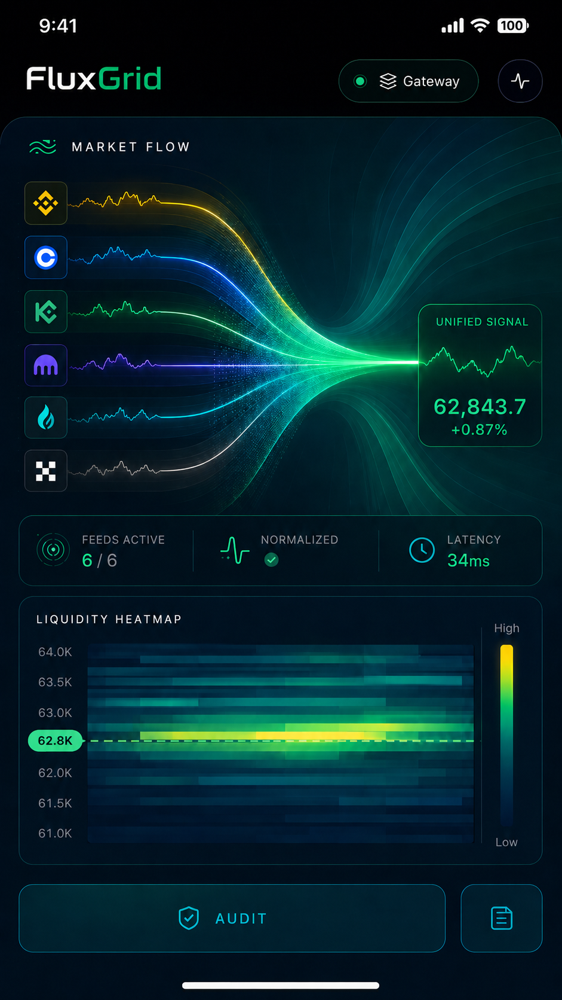
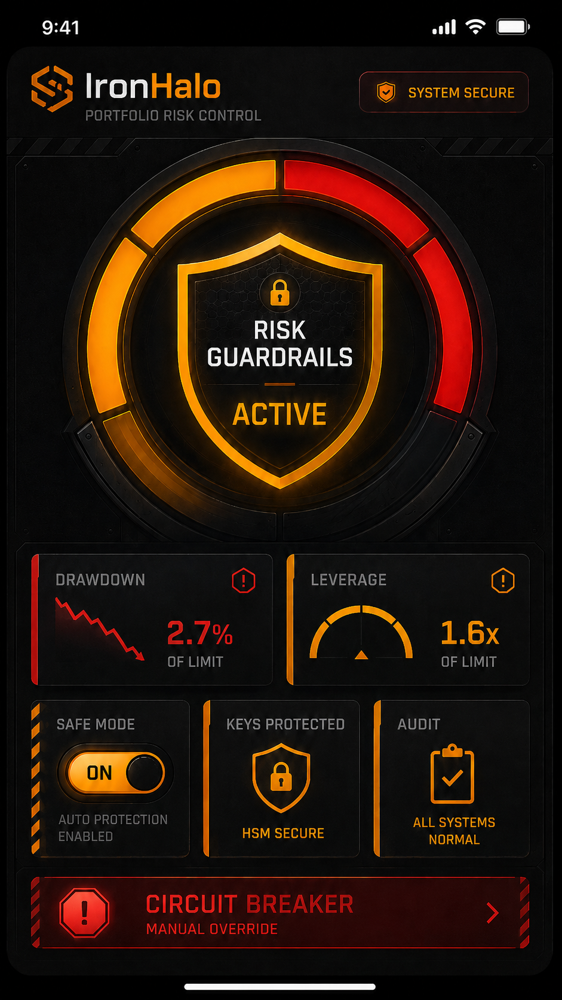

SignalPlusOS.ai
交易 Agent 时代的云端计算生态。
云端交易电脑、SignalPlusOS Kernel、AI-built Apps、Marketplace、数据与执行基础设施，在同一个可信环境里同时出现。
Gateway
Execution
Audit
Marketplace
Data
SigArc
IV 64.2
Delta 0.18
BTC 29D
+2.4%
FluxGrid
Basis
8.7%
Velora
Policy event
AI: Hedge banks
IronHalo
Risk limited
Audit on
Carry One
Funding
12.1%
产品宇宙
全系生态，细细看。
DevPod 负责创造，Compute Unit 负责运行。SignalPlusOS 把数据、模型、执行、记忆和安全放进系统层，Apps 通过 Marketplace 生长和流通。
by SignalPlus
不是凭空出现的 AI 概念，而是多年交易基础设施演进后的下一步。
2022
Trading Terminal
Professional options trading suite.
2022-23
MMBot
24/7 automated risk management.
2023
Structured Products Automation
RFQ and issuance hedging.
2026+
SignalPlusOS.ai
Cloud ecosystem for agentic trading.
Compute Unit
为交易 Agent 常驻运行的云端设备。
Compute Unit 不是普通云服务器。它是 SignalPlusOS 为交易 App 准备的运行设备：24/7 在线，靠近市场，接入数据与执行，记录状态与审计，并让每个 App 在受控环境中运行。
Compute Unit
CU Runtime
Gateway Data
Execution Route
Audit Trail
SignalDB State
Risk Guardrails
Market-adjacent Network
Runtime Layer
24/7 Online
App Health · Gateway Health · Order Events · Cost View
Runtime Challenges
创建 App 只是一刻，稳定运行才是每天。
交易 Agent 一旦上线，就要持续处理告警、数据异常、订单状态、账户变化、系统故障和资源消耗。CU 把这些运行问题放进同一套云端设备和操作系统里，而不是让每个开发者、每个用户自己搭一套运维体系。
01
告警不会自己消失
行情断流、订单异常、仓位变化、余额事件、App 报错，都需要被及时发现、分类和处理。CU 把这些运行事件统一接入，而不是让用户 24 小时盯着每个 App。
02
依赖越多，越需要系统稳定性
一个交易 App 可能同时依赖行情、账户、执行、LLM、SignalDB 和 Gateway。CU 负责监控这些依赖关系，让问题更早暴露、更快定位。
03
资源不是越堆越好
不同 App 对算力、存储、网络和数据的需求不同。CU 让运行资源与 App 工作负载匹配，避免每个团队都从零搭服务器、重复买资源。
Runtime Ops
把 7×24 运维，装进每台 CU。
CU 不只是运行 App 的算力，也内置面向金融场景的运行运维能力。告警、巡检、根因分析、变更、复盘和成本视图，会围绕 App、Gateway、订单、仓位、账户和资源使用持续工作。低风险事件自动闭环，高风险动作进入专家确认。
Event Hub
事件中枢
告警、工单、IM、运行日志和账户事件汇入同一个运行视图，让 CU 不只是发现故障，而是理解故障发生在哪条业务链路上。
Order route exception expert confirm
Account event classified
Low-risk alert auto closed
Proactive Patrol
主动巡检
CU 可以持续关联配置、链路、指标、日志和 App 状态，在告警形成之前识别潜在风险和资源异常。
RCA & Cost View
根因与成本透视
从 App 到 Gateway、账户、网络和底层资源，CU 能把异常和成本还原到具体业务、产品和资源链路上。
Root cause path
App → Gateway → Account → Network → Compute
App Health
Gateway Health
Order Events
Position Events
Audit Trail
Cost View
Compute Unit
看看哪台 CU 适合你的交易 Agent。
这不是 SaaS 套餐。它是一台云端交易设备，承载你的 AI-built Apps、数据连接、执行参数和审计状态。
CU Core
个人策略与轻量监控。
Runtime Ops Basic alerts
SignalDB Core timeline
Network Shared route
Co-location Regional zone
Private Line Optional
Data Pack Core market pack
CU Pro
跨市场 Agent 与组合工具。
Runtime Ops Alert inbox
SignalDB Replay timeline
Network Priority route
Co-location Market-adjacent
Private Line Cluster link
Data Pack Cross-market pack
CU Max
高频数据、复杂风控与多账户。
Runtime Ops Auto patrol
SignalDB Deep retention
Network Execution route
Co-location Multi-region
Private Line Dedicated path
Data Pack Institutional pack
CU Ultra
机构团队、白标与专用运行环境。
Runtime Ops Ops workbench
SignalDB Audit vault
Network Private fabric
Co-location Dedicated zone
Private Line Custom topology
Data Pack Custom pack
Co-location Network
把 CU 放到更靠近市场的地方。
交易所和券商分布在全球不同区域。SignalPlusOS 可以把 Compute Unit 部署在更靠近关键交易场所的区域，并通过跨区域专线连接不同交易集群，减少公共互联网路径带来的不确定性。
Tokyo
Market-adjacent zone
Singapore
Gateway route
London
Private line
New York
Execution route
CU Network Fabric
Private trading routes
Co-location · Gateway · Execution
靠近撮合引擎
交易执行不是只看代码，也看网络路径。CU 可以部署在更靠近关键交易场所的区域，让 App 运行在更适合交易的网络环境里。
跨区域专线
当交易工作流横跨亚洲、欧洲和美国市场，SignalPlusOS 可以通过交易集群之间的专线降低链路不稳定性。
比普通云服务器更像交易设备
普通云服务器给你算力；CU 给你靠近市场的运行位置、交易网络、数据接入、执行连接和审计环境。
Personal Cloud Server
下一代交易设备，不在手里，在云端。
手机、电脑、眼镜，都只是进入 Compute Unit 的方式。真正运行的是云端 CU：App 在那里 24/7 在线，连接市场，记录状态，并由 SignalPlusOS 保持同一套权限、风控和审计。
手机入口
SigArc
CU Live Gateway Audit On Risk Protected
Carry One +12.1%
电脑入口
FluxGrid / Velora
CU Live Gateway Audit On Risk Protected
眼镜入口
BTC Alert
Risk Protected
CU Live
Audit On
App 的生命在云端，所有屏幕只是入口。换设备，不换环境；关掉屏幕，运行不停。
SignalPlusOS Kernel
设备之上，是交易操作系统。
App 可以自由创造，但数据、执行、权限、密钥、风控、状态和审计，都由 SignalPlusOS 授权与管理。
Data
Execution
Key
Permission
Risk
Audit
Why SignalPlusOS
你当然可以自己开始。
用 AI 写 App
买云服务器运行
自己接外部 API
能做出来，不等于能安全、稳定、低成本、长期运行。
复杂性不会消失，只会转移。
AI 让 App 更容易被创造，但交易系统的复杂性仍然存在：数据、执行、密钥、权限、状态、网络、运维和长期记录。SignalPlusOS 把这些复杂性转移到操作系统层，让开发者专注于 App，让用户专注于交易。
Exchange APIs
Market Data
API Keys
Order Routing
Rate Limits
Venue Failures
Latency
State
Logs
Storage
SRE
Cost
Risk Rules
复杂性进入操作系统层
Complexity Moves Into SignalPlusOS
SignalPlusOS Kernel
Compute Unit
API Gateway
SignalDB
LLM API Runtime
Runtime Ops
Security Boundary
01
数据和接口，交给 Gateway
App 不需要各自接交易所、行情源、账户接口、资讯和外部数据。API Gateway 把金融世界接成系统能力，App 只向 SignalPlusOS 请求数据。
02
运行和运维，交给 CU
交易 App 不是生成后就结束。它要 24/7 在线，处理告警、订单、仓位、资源、网络和故障。CU 承接这些长期运行问题。
03
密钥和边界，交给 Kernel
App 不直接碰密钥，不随意联网，不绕过权限下单。SignalPlusOS Kernel 管理 Key、权限、执行、风控和运行边界。
你用 AI 创造 App。SignalPlusOS 承接交易系统的复杂性。
LLM API Runtime
让每台 CU，都能调用超多 LLM API
SignalPlusOS.ai 把 OpenAI、Claude、Gemini 主流模型接入为系统能力。开发者创建 App 时，可以调用不同模型能力；用户安装 App 后，也可以在自己的 CU 中选择模型运行。模型调用不会集中压在开发者身上，而是随着每个用户、每个 App、每个运行事件，在各自 CU 中独立计量。
OpenAI
Claude
Gemini
More
Developer
Build App
LLM APIs OpenAI · Claude · Gemini · More
Provider Setup Handled by SignalPlusOS
Billing User CU Metering
LLM API Runtime
LLM APIs for Every CU
Reasoning
Chat
Vision
Image
Code
Market Analysis
User CU
Installed App
Choose LLM OpenAI · Claude · Gemini · More
Runtime Runs in My CU
Metering My CU Meter
Developer Key Not Used
Active CU MeterAnytime Model Switch
LLM Runtime Event
provider
model
tokens
latency
app
CU
每次 OpenAI、Claude、Gemini 调用，都可以形成一条 runtime event。调用规模、成本和性能，随运行环境被记录和计量。
主流 LLM API，系统级接入
OpenAI、Claude、Gemini 等模型能力，被接入 SignalPlusOS 的系统层。开发者创建 App 时，不需要逐家开通模型平台、管理 API Key 或适配不同接口。
同一个 App，多种模型跑法
同一个 App 安装到不同用户的 CU 后，可以调用不同模型运行。开发者不用为每个模型维护不同版本，用户也不用被开发者预设的模型绑定。
每台 CU，独立调用与计量
App 运行时的模型调用，不会集中消耗开发者的 API Key。每个用户的 CU 都有自己的模型运行环境，调用、计量和成本归属各自独立。
API Gateway
把整个金融世界，接成 App 可以调用的系统接口。
SignalPlusOS Runtime 通过 API Gateway 接入多资产行情、衍生品、期权、预测市场、DeFi、宏观经济、上市公司披露、能源、链上 TVL、LLM 推理与资讯等 typed data surface。App 不需要自己联网，也不需要逐个接数据源；它只需要向 SignalPlusOS 请求标准化、权限化、可审计的数据能力。
数据不再散落在外部 API 里
行情、账户、订单、期权、DeFi、宏观、披露、链上和资讯数据，都被 API Gateway 接成统一的系统能力。App 不需要自己联网去找数据源。
每种数据，都有类型和边界
ticker、order book、option chain、funding rate、positions、TVL、XBRL、macro series、LLM responses 等能力，都以 typed interface 暴露给 App，并受权限和风控约束。
开发者只关心要什么数据
App 只需要向 SignalPlusOS 请求数据和能力，不需要处理不同市场、不同协议、不同格式、不同实时流的接入细节。交易相关基建由操作系统统一完成。
01 Multi-Asset Market Data Typed · Realtime · Historical ticker · latest trade · quote · order book · OHLCV · snapshot · auction · metadata
02 Equities Typed · Historical · Metadata latest trade · quotes · bars · market movers · most-active · logo · exchange metadata
03 Crypto Spot Typed · Realtime · Metadata price · order book · trades · OHLCV · snapshot · global market · trending coins
04 Perps / Futures Typed · Realtime · Execution funding rate · funding history · mark price · open interest · long/short ratio · liquidation · ADL rank
05 Options Typed · Realtime · Historical option chain · metadata · latest quote · historical bars · Greeks · IV surface · settlement · exercise
06 FX & Fixed Income Typed · Historical · Macro FX rates · crosses · yield curve · treasury series · bond metadata · rate snapshots
07 Trading & Account Data Private · Permissioned · Execution orders · fills · balances · positions · portfolio history · ledger · subaccounts · fees
08 Private Realtime Streams Private · Realtime · Audited user orders · fills · positions · balances · restrictions · API status · private event stream
09 Prediction Markets Typed · Realtime · Historical markets · events · tags · order books · midpoints · prices · spreads · price history · positions · volume
10 DeFi Swap Typed · Execution · On-chain swap quote · route · calldata · gasless orders · token approvals · execution estimate
11 DeFi Liquidity / Pools Typed · Historical · On-chain pools · tokens · gauges · APY · liquidity · volume · incentives · pool metadata
12 DeFi Lending Typed · Risk · On-chain lending markets · borrow rates · supply rates · health factor · collateral · liquidation threshold
13 On-chain / DeFi Aggregates Typed · Historical · On-chain protocol TVL · chain TVL · DEX overview · stablecoins · bridges · revenue · fees
14 Macro Time Series Typed · Historical · Calendar observations · series metadata · recent updates · release dates · revisions · regional datasets
15 Central Bank / International Stats Typed · Macro · Historical 央行统计 · policy rates · balance sheets · IMF / OECD / World Bank series · country metadata
16 Energy Data Typed · Macro · Calendar energy datasets · inventories · crude · natural gas · power · release calendars · regional series
17 COT Positioning Typed · Weekly · Macro COT futures positioning · commercials · leveraged funds · asset managers · history · changes
18 Company / Regulatory Filings Typed · Corporate · Historical company submissions · XBRL facts · financial frames · Form 4 · annual reports · insider filings
19 Corporate Actions & Calendars Typed · Calendar · Corporate earnings · dividends · splits · mergers · IPO calendar · events · symbol changes
20 Identifier & Symbol Intelligence Typed · Metadata · Mapping symbol search · identifier mapping · venue metadata · contract specs · logo · aliases · asset taxonomy
21 LLM APIs & Unstructured AI LLM · Metered · CU OpenAI · Claude · Gemini · streaming events · image generation · embeddings · TTS · STT
22 AI News / Research Context Typed · Research · LLM AI news · daily reports · daily archives · research context · summaries · source metadata
API Gateway 把金融世界接进来，SignalDB 把每一次变化写成可查询、可回放的交易时间线。
SignalDB
SignalDB 是 SignalPlusOS 内置的交易级金融时序数据库
面向 100TB 级热数据窗口、百万点/秒级写入压力、6 个月窗口内高并发查询，以及交易、风控、审计、运营多业务消费而设计。行情、订单簿、订单、成交、仓位、风险状态、Agent 决策和 App 事件，都可以按时间被写入、查询、聚合和回放。交易不是一张静态表，而是一条不断变化的时间线；SignalDB 让每个 App 都能站在这条时间线上工作。
100TB
Hot Data Window
1M+ / sec
Point Ingest Pressure
6M
Query Window
2x+
Write Throughput Anchor
2–11x
Heavy Query Anchor
1B+
Rows Tested
Market Ticks
Order Book
Orders
Fills
Positions
Risk State
Agent Decisions
App Events
SignalDB
Trading Time-Series Engine
Write · Store · Query · Serve
SQL Query
Streaming Subscription
Business-Key Joins
Realtime + Historical
t-6M
t-30D
t-1D
now
Ingest
Store
Query
Serve
Trading Apps
Risk Review
Audit Replay
Backtest
Ops Query
Reports
100TB 级热数据窗口
交易系统既要快速访问最近数据，也要保留可回放的历史时间线。SignalDB 面向 100TB 级热数据窗口与 TTL 策略设计，承接行情、订单簿、K 线、funding、Greeks、订单、成交、仓位和风险状态。
百万点/秒级写入压力
撮合、行情、交易和风控指标会持续产生事件。SignalDB 面向百万点/秒级写入峰值与稳定性，把高频事件写入同一条交易时间线。
6 个月窗口内高并发查询
App 可以回看 6 个月窗口内的行情变化、成交路径、资金费率、风险状态和 Agent 行为，支持聚合、排序、回放、复盘和风控分析。
一笔订单，一条时间线。
SignalDB 可以按 order_id、user_id、product、venue、symbol、session_id 等业务键关联查询，把一笔订单从创建、路由、成交、仓位变化到风险状态的链路贯穿起来。
Infrastructure Services
AI 生成 App 不是壁垒。真正的壁垒在底层。
Gateway、机构级数据、执行连接、QuantLab、风控、审计和贴近交易所的算力，是交易 Agent 无法自己补齐的基础设施。
Gateway Data curated market feeds Execution Connectivity multi-broker routing QuantLab Libraries pricing and simulation Risk Guardrails limits and rollback Audit Trail reconstructable events Protected Key Layer keys never exposed to apps
Security & Trust
安全不是功能，是系统级设计。
App requests order access
App requests position data
App requests external network
Approved
Limited
Blocked
Audit Recorded
AI Coding Agents
把交易想法，交给适配过的 Coding Agents。
SignalPlusOS.ai 支持 Codex、Claude Code，也提供面向交易场景调校的自有 Coding Agent。它们运行在 DevPod 这个云端开发空间里，不只是写代码，而是理解 SignalPlusOS 的数据、执行、权限、风控和 CU 部署方式，把一个模糊的交易想法拆解成可运行、可安装、可发布的完整 App。
SignalPlusOS Context
Gateway Data
Execution APIs
Permission Rules
Risk Guardrails
CU Deployment
Marketplace Package
Adapted Coding Agents
SignalPlusOS Agent
Codex
Claude Code
Research → Build → Package → Deploy
先做需求调研，再开始开发
SignalPlusOS 自有 Coding Agent 可以先帮你拆解需求：这个 App 要解决什么问题、需要哪些数据、适合什么界面、有哪些风控边界、需要哪些权限，以及最终如何部署到 CU。
Codex、Claude Code，接入 SignalPlusOS 开发环境
SignalPlusOS.ai 支持 Codex 和 Claude Code，并为它们提供适配过的交易开发上下文：Gateway 数据、执行接口、权限规则、审计要求、CU 部署配置和 Marketplace 打包方式。
生成的不是代码片段，是完整 App
Coding Agent 输出的不只是策略逻辑，还包括界面、参数配置、数据连接、执行路径、风控规则、审计链路和部署文件。App 可以直接安装到用户的 Compute Unit 中运行。
一句话到 App
一个自然语言动作，触发完整产品生成。
做一个 BTC 资金费率套利策略，两腿任一失败就回滚。
正在生成界面、策略逻辑、风控参数、执行连接和审计链路。
Build
Deploy
Run
Financial Apps
App 让生态活起来。
策略只是开始。数据终端、风控、期权分析、事件对冲、组合管理，都可以成为 App。


Marketplace
好 App 会流动，也会回报创造者。
发现、安装、Fork、发布。收益沿贡献链回流，而运行始终发生在用户自己的 Compute Unit。
Creator Builds
Publish
Install to CU
Fork
Royalties Flow Back
SignalPlusOS Installer
Install IronHalo
Deploy to CU Max - Tokyo
Risk Limit
On
Audit Trail
Recorded
Key
Protected
Marketplace Trust
安装不是下载。是部署到你的 CU。
App 可以流通，但权限、风险、版本和审计边界必须先被系统确认。
Alpha / Configure
开始构建你的云端交易系统。
选择 Compute Unit，申请 Alpha，创建、安装或发布你的第一个 SignalPlusOS App。